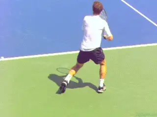
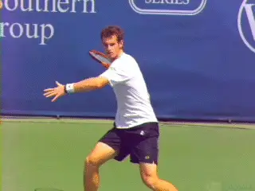
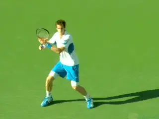
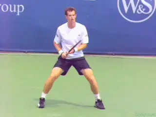
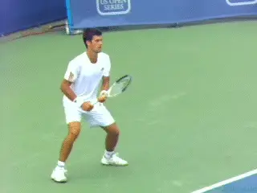
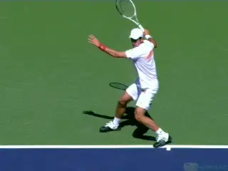
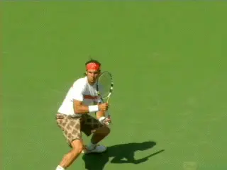
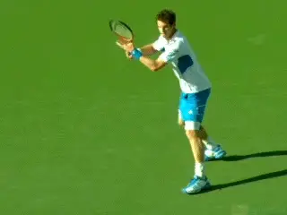
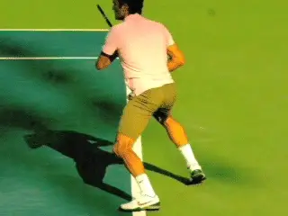

Andy Murray and the Open Stance Forehand¶
Andy Murray and the Open Stance Forehand¶
John Yandell¶
No doubt Andy Murray made progress toward the top of the game in Australia. Whether it was primarily the influence of Ivan Lendl or more his growth as a player---or both--he was far more aggressive and successful in attacking opponents and winning points through offense.
If he continues to do that, will Andy break through and win a Slam and maybe even get to the top of the game? Sure, maybe.

Is Andy Murray's use of extreme open stance limiting his forehand?
But when we look at his game technically, there is at least one factor that may be holding him back--his forehand. Specifically, his predominant use of an extreme open stance may be reducing the potential of his forehand as a weapon against the very top players.
Now wait all you "modern tennis" exponents---don't have a stroke and start emailing me about the greatness of open stance until I explain what I mean. I am not saying that Andy's forehand isn't a world class shot, because obviously it is.
But is it the equal of the other top players? The fact is that in terms of velocity and weight, it's slightly below the level of Djokovic, Federer or Nadal.
It would be great to have average forehand speeds over a large number of matches readily available. But from the Hawk Eye data that is sometimes presented in television broadcasts, Andy's forehand seems to max out at around 90mph.

90mph and 2300rpm is big and heavy, but not biggest or heaviest.
That's big. But some of the other players are reaching 100mph, or even slightly higher.
We also know from our high speed video studies that his forehand doesn't have the same levels of spin as the top three players either. Andy averages around 2300rpm of spin. That's about 20% less spin than Djokovic or Federer, who are in the 2700-2800rpm range. It's 30% less spin than Nadal who is at about 3300rpm.
Yet Andy is actually taller than the other three players and seems as strong or stronger physically. He can also hit a 130mph serve.
So is there any reason why his forehand isn't quite as big? When we look at his stance preferences, we see a possible answer. It's definitely true in the modern game that the vast majority of all forehands are hit with some version of an open stance. (For more on why that is, link.) But what too many analysts and coaches overlook is that there are two major open stance variations.
These variations have an impact on the quality of the ball the players produce. But that impact isn't widely understood or discussed.
Two Open Stance Variations
The first variation is what I call the fully open or extreme open stance. With this version, both feet can be parallel to the baseline. But usually they are slightly offset, meaning the left foot is a little closer to the net.

Compare the position of the left foot and the amount of turn in the open versus semi-open stance.
Then there is the semi-open stance. In the semi-open stance this offset is significantly greater, with front or left foot is much closer to the net.
A line drawn along the edge of the feet in the semi-open stance is at an angle of about 30 to a 45 degrees to the baseline. As the name implies---semi-open--this stance is somewhere in between a fully open stance and a neutral or square stance where the player steps directly forward with the front foot.
If we look at high speed video, it's clear that the semi open stance is by far the preferred stance for most players in the pro game. And this is true of the three players currently above Andy: Novak, Roger and Rafa.
And stance appears to be a fundamental factor affecting the amount of pace and spin on the forehand. Why?
Because stance is critical in determining the amount of torso rotation in the forehand. This means the amount of shoulder rotation, but especially the amount of rotation in the hips. This is true in both the preparation and the forward swing.
Extreme open stance restricts the amount of rotation in the hips in the initial body turn. This then restricts the amount of hip rotation forward to the contact in the hitting phase.

Extreme open stance can mean less hip and also less shoulder turn.
[This restricted hip rotation also affects the shoulders. Typically when the hips don't turn as far, the shoulder turn is somewhat restricted as well. This affects shot velocity and weight. This is because both the hips and the shoulders contribute directly to racket head speed as well as setting up the contribution of the hitting arm.]
You can see how the stance affects the turn in the high speed video of Andy's forehand. Watch as he prepares on a basic forehand near the center of the court. He has the time and the opportunity to set up however he prefers, and he chooses the full open stance.
[Look at the positioning of the feet. The left or front foot is almost parallel to the back foot, offset slightly toward the net. Now look at the hips. We don't have a way to measure the angle exactly in the video, but it looks like Andy's hips are turning about 30 degrees away from the net or maybe a little more.]
[Now let's compare that to a semi-open stance set up by Novak Djokovic on a similar ball. Look at the difference in the position of the left or front foot.]
[The offset is much greater. A line drawn across the tips of his feet looks like it would be at a 30 degree angle to the baseline at least, if not more.]

[A semi-open stance is associated with greater torso turn in both the hips and shoulders.]
[This difference in the stance has a direct impact on the amount of hip turn. Again we can't make an actual measurement, but Novak's hips are clearly more turned, probably something like 60 degrees away from the net or further, maybe twice as much as Andy's.]
The stance also effects the angle of the shoulder turn, as we can again see in the differences between Andy and Novak. Andy's shoulders are definitely well turned---square to the net or a little more.
But look at Novak. His shoulders are turned somewhat further, maybe another 10 or 20 degrees. We see these same elements in the semi-open stance forehands for Roger and Rafa---more hip and more shoulder rotation.
Forward Swing
Now let's see what that actually means when the players rotate forward to the contact. Watch in the animated comparison how much more hip rotation Djokovic has from the set up to contact compared to Murray.
In the modern game, the hips and the shoulders are usually parallel to the baseline at contact. Both Novak and Andy arrive at this same position, but because of where they start, Novak rotates his hips much more than Andy, again maybe twice as much.

[From the semi-open stance Novak rotates further to contact than Andy.]
We see that there is slightly more shoulder rotation as well. The result has got to be more energy released in the shot, translating to more speed and/or spin.
[One of the factoids that coaches talk about in evaluating the modern forehand is the so-called "X" factor. This is the displacement or the difference in the amount of turn of the hips compared to the amount of turn in the shoulders at the completion of the preparation. The greater this displacement, the greater the energy when the hips and shoulders release in the forward swing.]
And I am sure that is true--but I suspect only within certain parameters. My belief is that certain minimal levels of body turn are required, and that the amount of body turn is at least as important, and probably more important, than the displacement angle.
Ideally, players want a strong hip turn with a shoulder turn that goes significantly further. But my guess is that Andy isn't reaching the minimum hip turn that allows a player to really benefit from this so-called X factor. Again this difference with the other top players is a function of his stance.
A Question of Percentages
It's important to note that Andy uses a semi-open stance at times. But the majority of his forehands are hit fully open.

The top three players all use more semi-open stance with more body turn.
For Djokovic, Federer, and Nadal it's the opposite. They also use the extreme open stance at times, but the majority of their forehands are hit semi-open.
And that's the point. What is the norm for Andy is the exception for the other top players. And vice versa.
[All top player use all the stances, including a percentage that] are neutral or square stance. [This stance selection is partially situational, depending on depth, height, and ball speed. But it is also a matter of preference, or possibly training, or some combination of both.]
If we look at the percentages, we see that Andy hits about 60% of his forehands fully open. That's three times higher than Djokovic who hits fully open only 20% of the time.
Novak hits over 60% of his forehands semi-open, and the stats are similar for Federer and Nadal. It's possible that this fact alone accounts for the differences in forehand velocity and weight when we compare Andy to the other top players.
Interestingly, when Andy does set up semi-open like the other players he increases the hip and shoulder turn. The question is how this would effect his ability to do more with his forehand if he changed his stance percentages consistently over time.

Notice the increased hip and shoulder turn when Murray sets up semi-open.
The Underrated Neutral Stance
[One further related issue here may be the use of neutral stance. Although the vast majority of forehands hit by players in pro tennis use some version of open stance, all players use neutral stance at times.]
Interestingly, Andy uses neutral stances the least of the top four, much less often that Novak or Roger or even Rafa. In our footage, Roger steps directly in with the front foot in a neutral or square stance about 12% of the time.
For Novak and Rafa the number is similar, about 10%. But Andy hits neutral on only about 2% of all his forehands. He rarely steps in even on the shorter, lower balls where neutral stance is most common in the pro game.
Is it possible that his heavy use of the fully open stance makes him less comfortable in a situation where a more conservative stance might produce a better result? Hard to say for sure, but an interesting question.
Lesson for the Rest of Us
In my opinion there is a very important lesson here for all players, and especially players at the club level who want better forehands. With the rise of "modern" tennis, many teaching pros have placed great emphasis on the open stance, because "that's the way the pros play."
And that is not necessarily a bad thing. Unfortunately though there has been far less emphasis on the differences in the open stances, and even less attention paid to the pro body turn, one of the very few commonalities in the pro game regardless of stance.

Note the natural increase in hip turn with the neutral stance.
In fact if you watch much club tennis it is actually shocking how few players are preparing fully with the upper body. And ironically, the full turn, as we have discussed many times, is one of the easiest elements for players at any level to copy from pro players, and one of the very view that is universally applicable to the club game. (link.)
The emphasis on the open stance only makes this problem worse in my opinion. If a player doesn't understand the turn and is taught to set up fully open it can make great preparation impossible. I've seen so many players show up at my court proud of learning the modern open stance, but with little body turn and forehands that lack power, consistency and spin because of it.
Most club players should be hitting some percentage of forehands with a semi-open stance, but as with the pros there are balls where a neutral stance is more appropriate---and these balls are likely to be much more frequent in club tennis.
My experience with lower level players is that learning to hit neutral stance makes it far easier to develop a full body turn---especially with the hips---and that this feeling of really coiling can then translate to the other stances as well.
But getting back to Andy, how hard would it be for him to change any or all of this in his game at his exalted level? And would it actually make a difference? Now that would be an interesting experiment.
I'm hoping for an opportunity to show this analysis to my old friend, Coach Ivan Lendl. If I get his attention, it'll be interesting to hear what he says. He's on record actually advocating more neutral stances on the forehand for pro players, but you never know who is interested in video analysis and who isn't. Stay tuned and I'll let you know if anything develops!

John Yandell is widely acknowledged as one of the leading videographers and students of the modern game of professional tennis. His high speed filming for Advanced Tennis and TPA have provided new visual resources that have changed the way the game is studied and understood by both players and coaches. He has done personal video analysis for hundreds of high level competitive players, including Justine Henin-Hardenne, Taylor Dent and John McEnroe, among others.
In addition to his role as Editor of TPA he is the author of the critically acclaimed book Visual Tennis. The John Yandell Tennis School is located in San Francisco, California.
← Roddick's Backhand | Advanced Tennis Index | Is Don Budge's Forehand Good Enough for You? →